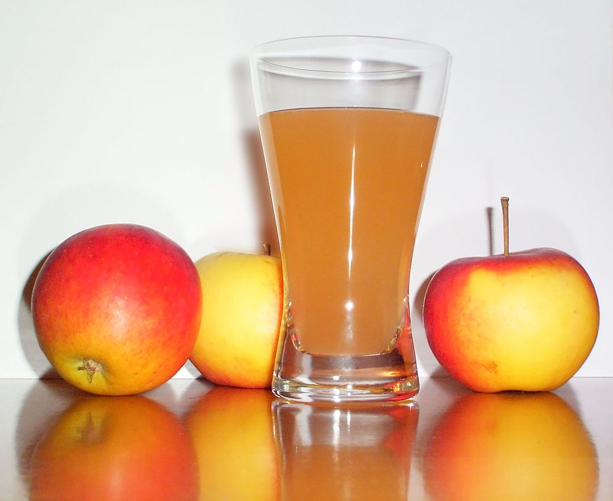
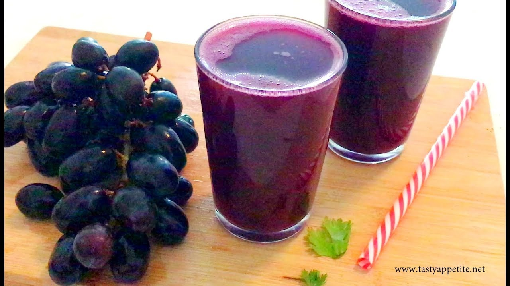

1. Orange Juice
Popular for a reason. Good taste and mildly sour for a citrus fruit. The texture varies greatly depending on brand, which results in some juices with a grainy mouth feel.

2. Apple Juice
Goes well with many lunch foods, but can leave an undesireable aftertaste, depending on the brand.
3. Grape Juice
Tasty, but usually quite strong. Can leave an undesirable mouth feel.
